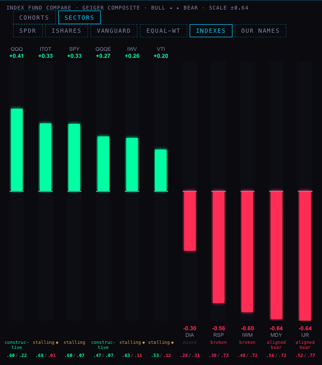
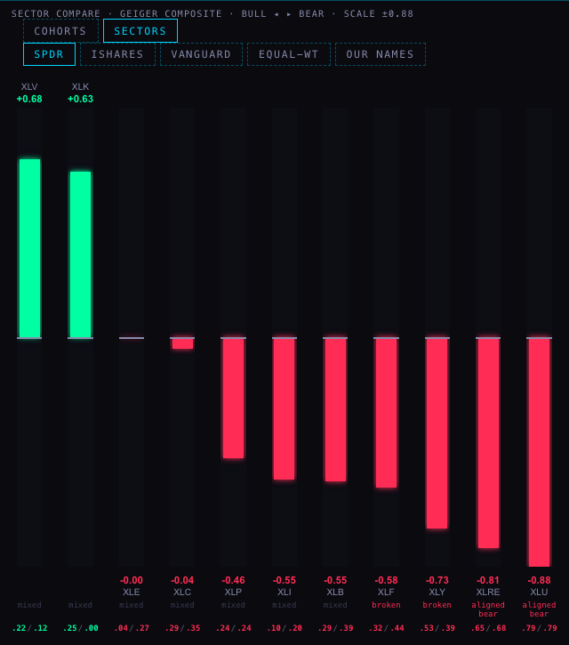
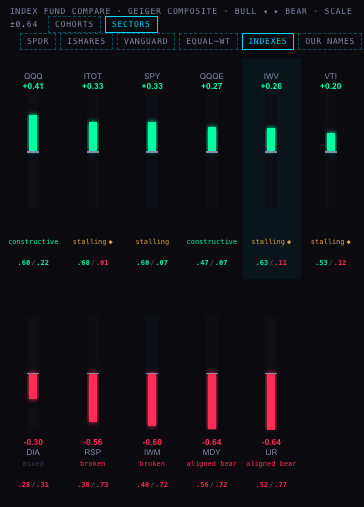
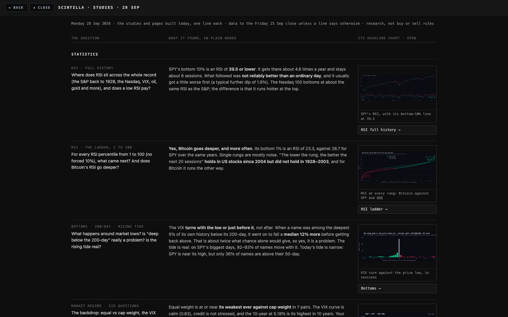
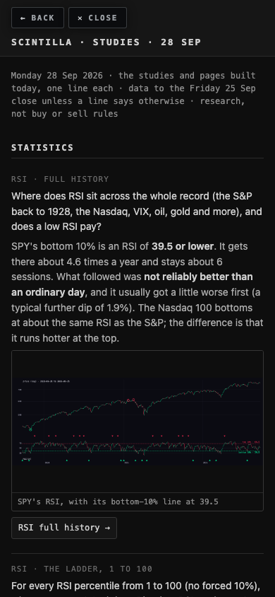
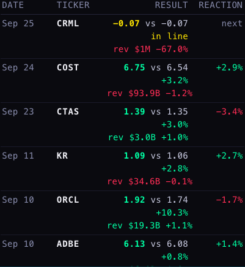
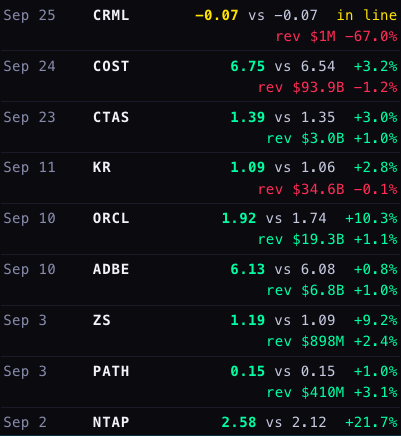
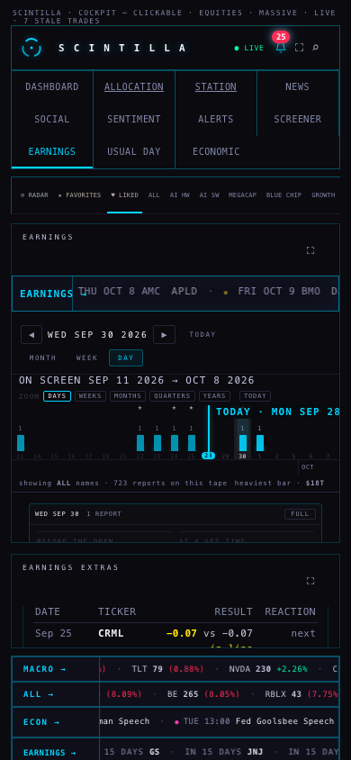
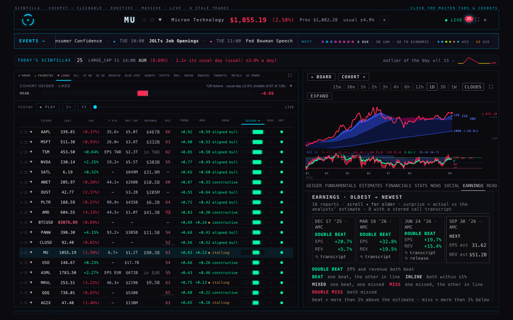
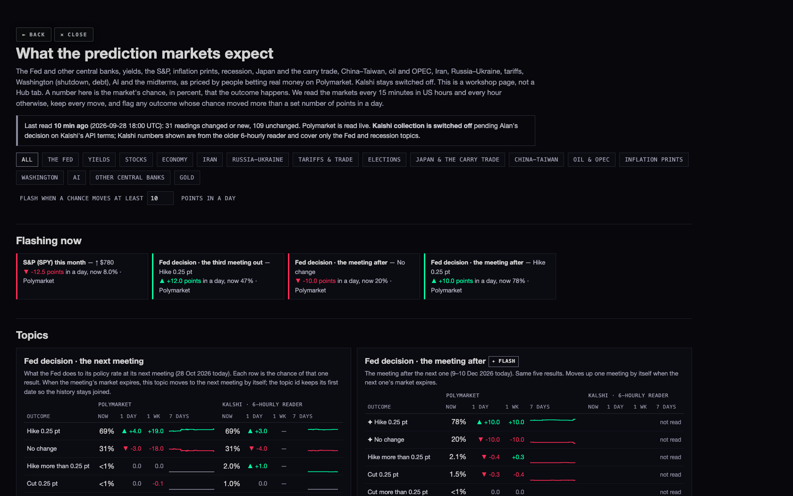

N6 · branch candidate/hub-bundle-20260928, built on the live Hub (717c768) · nothing deployed · screenshots taken headless at 1680 and 390 wide · 28 Sep 2026, 17:34–18:30 UTC
1 · INDEXES, IN SECTOR COMPARE
What it shows. Cohort Compare → SECTORS now has an INDEXES button beside SPDR, iSHARES, VANGUARD, EQUAL-WT and OUR NAMES. It lines up the broad index funds, each by its own Geiger, sorted from most bullish to most bearish, so the index funds get their own bow tie. The header reads INDEX FUND COMPARE. Like the other buttons, the choice is remembered on this device: after a reload the page comes back on INDEXES.
Which funds. The brief's list, keeping only the funds that have a Geiger: SPY, QQQ, DIA, IWM, MDY, IJR, RSP, QQQE, IWV, ITOT and VTI (11). QQEW and EQAL have no Geiger yet (checked on the chart API's live Geiger list of 486 names at 17:33 UTC), so they are left out rather than shown as empty columns. QQQE stands in for the equal-weight Nasdaq-100.
What it said today (live Geiger, mid-session): the bow tie is cap-weight against everything else. Green: QQQ +0.41, ITOT +0.33, SPY +0.33, QQQE +0.27, IWV +0.26, VTI +0.20. Red: DIA −0.30, RSP (equal-weight S&P) −0.56, IWM −0.60, MDY −0.64, IJR −0.64. In plain words, the big cap-weighted indexes are holding up while equal weight, mid caps and small caps are not, the same narrowness you saw in the sector bow tie.



Where the numbers come from. Each column is that fund's own Geiger composite from the chart API (the same number the board shows for SPY or QQQ). While the rewind bar is scrubbed back, the columns rewind too, the same way the other families do.
What could be wrong. Nothing new is computed; the risk is only in which funds are listed. If QQEW or EQAL are admitted later, they need one line added.
2 · THE STUDIES INDEX, WITH A CHART FOR EACH STUDY
What it shows. Every study on the studies page now carries a thumbnail of its own headline chart; tapping it opens the study. The page also gained the five studies it was missing: sector rotation, statistician 1 (the method standard), statistician 2, the coverage tree, and prediction markets, each with a one-paragraph headline copied from its own page.


Which chart for which study. The one that carries the study's headline: SPY's RSI with its bottom-10% line (RSI history); Bitcoin against SPY and QQQ at every rung (the ladder); the VIX turn against the price low (bottoms); equal weight ÷ cap weight (regime); the top-10 share of each up year (leaders); the widest-ever bow tie (sector rotation); the honest range around the 200-day number (statistician); RSI floors by security type (statistician 2); and so on. Six studies saved no chart at all (the scout pages, fund valuation, the coverage tree, the market map and the prediction-markets page are tables or live pages). For those the thumbnail is the study's own saved screenshot, and its caption says "a page view" so it is not mistaken for a chart. All 17 are saved as images in studies-index/thumbs/; hub-bundle/tools/study-thumbs.mjs rebuilds them and lists the source of each.
What could be wrong. A thumbnail is small; it is a signpost, not something to read numbers from. If another lane edits the studies page tonight, the coordinator will need to merge the two edits.
3 · USUAL DAY: THE HISTORY NOW TOPS ITSELF UP EVERY NIGHT
What it does. A new scheduled job, sigma-daily, runs after each close. It looks up the newest date already stored, measures each new trading day for every name with the same test the 28 Sep load used (it imports the same maths file), and adds the new rows to sigma_events_daily and sigma_day_counts. It never changes a row that is already there, never touches a price table, and never touches the live detector's own table.
When. 23:20 UTC Monday to Friday (19:20 New York time), and a catch-up pass at 11:20 UTC the next morning. The chart API only serves a day's bar once that session is complete, so the evening pass stores a settled day. If some names' bars are late, the newest day waits instead of being half-written, and the morning pass writes it. A missed night heals itself, because each run starts from the newest date already stored.
Proof, without writing anything. I re-measured 22–25 Sep the way the job will (about 105 daily bars per name instead of the whole 23-year series) and compared the result with the rows loaded this morning: all 59 stored events matched exactly (move, usual day, times usual, direction, which rule fired), and all four day-count rows matched (486 names measured each day; 17, 25, 9 and 8 names fired). The actual function file also ran end-to-end in a dry run: 486 names in 13 seconds, 0 failures, and it planned exactly the 24–25 Sep rows already stored. Saved: sigma-topup-proof-20260928.json.
What I could not do: prove tonight's rows landed. Landing them needs the function deployed and the schedule applied, which is the coordinator's step (no deploy, no database write from this lane). The 28 Sep bar was not yet served when I checked (the chart API's newest bar was 25 Sep, correctly, since today's session was still open). The commands, in order:
supabase functions deploy sigma-daily --project-ref wadinxqplrggagkvrdag # apply supabase/migrations/20260928_sigma_daily_cron.sql (rollback: 20260928_sigma_daily_cron_ROLLBACK.sql) # forced run for 28 Sep, once the chart API serves the 28 Sep bar (after about 18:30 New York time): curl -s -X POST "https://wadinxqplrggagkvrdag.supabase.co/functions/v1/sigma-daily" -H "Authorization: Bearer $FUNCTIONS_BEARER" # the answer lists dates_written (expect 2026-09-28) and added rows; add ?dry=1 to look first # check: select * from public.sigma_day_counts where date = '2026-09-28'; select count(*) from public.sigma_events_daily where date = '2026-09-28';
Rollback. The rollback file removes both schedules. Removing the rows the job added is written out in it too, but commented, because it deletes rows and that is your call.
4 · THE EARNINGS ROOM: A REACTION COLUMN IN THE PAST-REPORTS LIST
What it shows. The past-reports list on the right of the EARNINGS room now has a header (DATE · TICKER · RESULT · REACTION) and a small REACTION column: how the stock moved in the first session that could trade the news, close against the previous close, green up and red down. A report made before the open is measured on its own day; one after the close, on the next day.



Where the numbers come from. The chart API's daily bars only, never a Hub price table. The list asks only for as many bars as reach its oldest row (a few dozen bars a name for a list that reaches back weeks, not the 1,500 the full history view reads), so opening the room stays light. It is the same calculation the room's history view already uses for REACTION.
What could be wrong. About half the stored reports have no report time. For those the page assumes the news came after the close and measures the next session; such cells are dotted-underlined, and hovering says so. If a company actually reported before the open, that cell shows the wrong day's move. In today's list 6 of 60 are assumed.
5 · THE COMPANY VIEW'S EVENTS TAB NOW READS EARNINGS
All four places that draw the company tabs now say EARNINGS, matching the master tab. Behind the scenes the tab keeps its old key, so your saved tab, keys 1–9 and every link keep working. The trial copy at /preview/company-view/ was rebuilt from the same page.

6 · PREDICTION MARKETS: MORE TOPICS, AND MARKETS THAT ROLL BY THEMSELVES
Still a workshop page, not a Hub tab. It now has its own card in the workshop, and nothing on the Hub links it as a tab. Kalshi stays off.
23 topics added, all from Polymarket:
| Group | Topics |
|---|---|
| Japan & the carry trade | Bank of Japan: the next meeting, the meeting after · USD/JPY levels touched in 2026 |
| China–Taiwan | invasion before 2027 · blockade in 2026 · military clash before 2027 |
| Oil & OPEC | WTI levels this month · oil all-time high by… · another country leaves OPEC · Strait of Hormuz back to normal by… |
| Inflation prints | CPI (next print) · core CPI (next print) · core PCE (next print, 30 Sep) · how high inflation gets in 2026 |
| Washington | government shutdown (1 Oct, and shutdown + House) · US debt: default or another downgrade (no debt-ceiling market is open; the ceiling was raised in 2025) |
| AI | AI bubble bursts by… · AI safety bill / federal AI law |
| From the most-traded lists | ECB next meeting · gold levels this month · 30-year yield high before 2027 · US GDP growth 2026 · largest company at year-end |
The midterms (House, Senate, balance of power) and recession (2026, 2027) were already there and stay.
Market expiry, in one sentence (as it now reads on the page): "Every market has a last day, after which it stops trading and pays out; when a market we track reaches it, the page moves that topic to the next market of the same kind by itself (after the 28 Oct Fed meeting, the December meeting), and its line starts again from the new market's first reading."
How the roll works. Polymarket groups repeating markets into a series (every Fed meeting, every monthly CPI print, every month's oil range). A rolling topic reads either "the next one in its series" (the three Fed topics are now the next, the second and the third meeting, whatever their dates) or "this one, then the next once it expires". I checked it against Polymarket live with the clock set to 30 Oct: the next-meeting topic moves to December, the second to January, and monthly oil, gold and SPY move to October. Where the next market is not listed yet (the fourth Fed meeting, October's CPI print), the topic waits and says so rather than showing an expired market. The page keeps one line per market, so a roll never shows as a false jump or a false flash.

Proof, without writing anything. The collector's real code ran one full pass under a test harness with every database call caught locally: all 47 topics that have a Polymarket market were read (the other 2 of the 49 are Kalshi-only and stay dark while Kalshi is off): 222 readings from 46 topics, plus 15 discovery rows. One topic produced no reading, and one of the shutdown topic's two markets was left out, because their only open market is priced under 1% and the page's existing rule leaves those out: shutdown by 1 Oct (the market says no shutdown) and Hormuz by 30 Sep. Saved: pm-roll-proof-20260928.json.
To switch it on (coordinator): supabase functions deploy prediction-markets --project-ref wadinxqplrggagkvrdag (it reads the new topics.json), and deploy the Hub branch for the page.
What could be wrong. The Kalshi column on the Fed cards comes from the older 6-hourly reader and does not roll; once a Fed topic rolls, the page hides that stale Kalshi column rather than put October beside December. Topic ids keep their first names (for example fed-2026-10 now means "the next meeting") so the stored history stays joined; every stored row records which market it came from.
WHAT I DID NOT DO
- Nothing was deployed, no schedule was created, and nothing was written to the database. The top-up and the new prediction topics wait on the coordinator's deploy.
- Tonight's USUAL DAY rows are not proven to have landed (see 3). The dry run proves the job reproduces the stored history exactly.
- No Kalshi reads, and no change to Kalshi's switch.
- The Indicator Lab is byte-identical; no other Hub room was changed.
- The EARNINGS EXTRAS box on a phone is still short (it was so before); only the new column's fit was checked there.